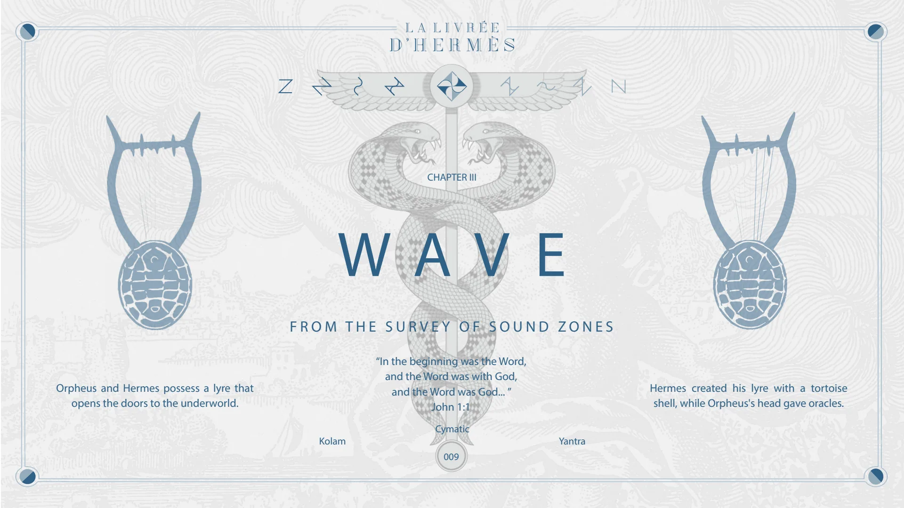
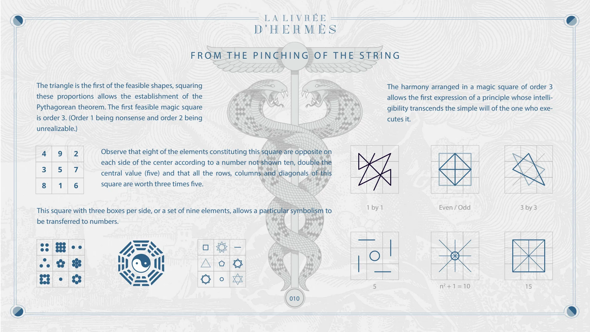
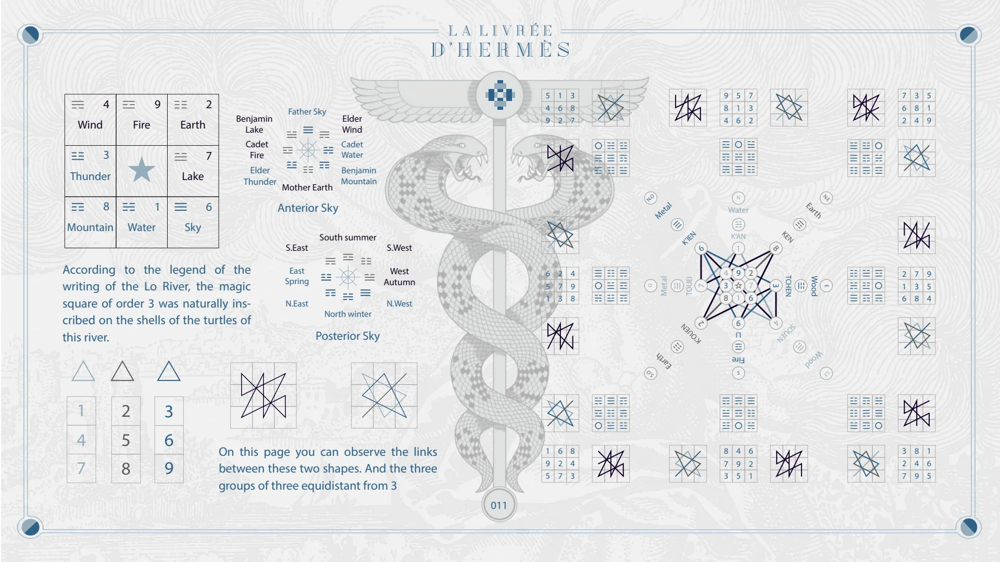
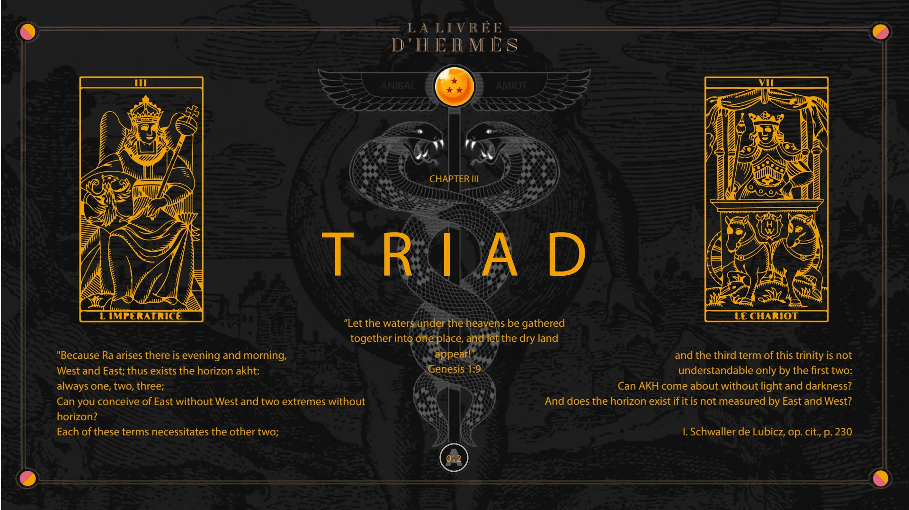
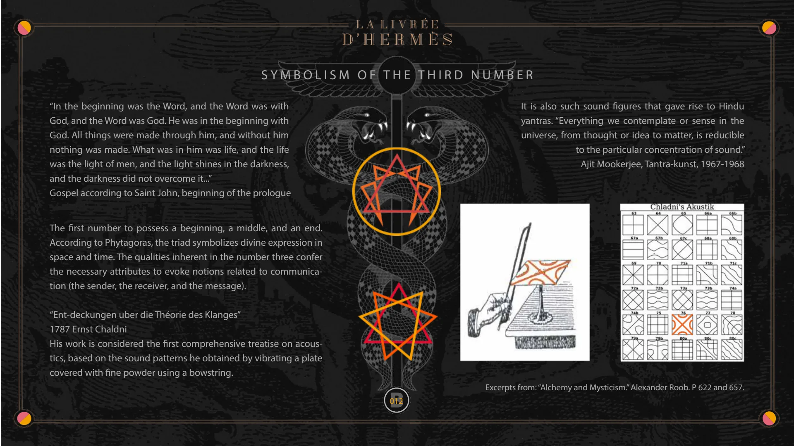
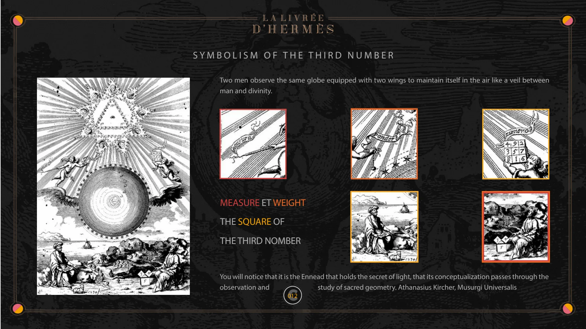

Chapter III — Wave, Triad
Pages 009 to 012C of the book · chapter 3 of 8
Chapter III of La Livrée d'Hermès: Wave and Triad. The survey of sound zones, the magic square of order 3 and the writing of the Lo River, then the symbolism of the third number.

CHAPTER III
WAVE
FROM THE SURVEY OF SOUND ZONES
Orpheus and Hermes possess a lyre that opens the doors to the underworld.
“In the beginning was the Word, and the Word was with God, and the Word was God... ” John 1:1
Hermes created his lyre with a tortoise shell, while Orpheus's head gave oracles.
Kolam Cymatic 009 Yantra

FROM THE PINCHING OF THE STRING
The triangle is the first of the feasible shapes, squaring these proportions allows the establishment of the Pythagorean theorem. The first feasible magic square is order 3. (Order 1 being nonsense and order 2 being unrealizable.)
Observe that eight of the elements constituting this square are opposite on each side of the center according to a number not shown ten, double the central value (five) and that all the rows, columns and diagonals of this square are worth three times five.
This square with three boxes per side, or a set of nine elements, allows a particular symbolism to be transferred to numbers.
1 by 1
The harmony arranged in a magic square of order 3 allows the first expression of a principle whose intelligibility transcends the simple will of the one who executes it.
Even / Odd 3 by 3 010 5
n2 + 1 = 10
15

4 Wind 3 Thunder 8 Mountain Fire 9 1 Earth Lake 2 7 6
Benjamin Lake Cadet Fire Elder Thunder
Father Sky Mother Earth
Elder Wind Cadet Water Benjamin Mountain
Anibal AMIOT 5 4 9 1 6 2 3 8 7 N.O Metal 9 8 4 5 1 6 N Water 7 3 2 N.E Earth 7 6 2 3 8 4 5 1 9 Anterior Sky Water Sky
According to the legend of the writing of the Lo River, the magic square of order 3 was naturally inscribed on the shells of the turtles of this river.
S.East East Spring N.East South summer North winter Posterior Sky S.West West Autumn N.West 6 5 1 2 7 3 4 9 8 O Metal Earth S.O
K’IEN
6
TOUEI
7
2 K’OUEN
4 3 8 K’AN 1 9 1 9 LI Fire S 2 7 6 KEN 8 3
TCHEN
4 SOUEN
Wood E Wood S.E 2 1 6 7 3 8 9 5 4 1 4 7 2 5 8 3 6 9
On this page you can observe the links between these two shapes. And the three groups of three equidistant from 3
1 9 5 6 2 7 8 4 3 8 7 3 4 9 5 6 2 1 3 2 7 8 4 9 1 6 5 011

CHAPTER III
TRIAD
ANIBAL
AMIOT
“Let the waters under the heavens be gathered together into one place, and let the dry land appear!” Genesis 1:9
"Because Ra arises there is evening and morning, West and East; thus exists the horizon akht: always one, two, three; Can you conceive of East without West and two extremes without horizon? Each of these terms necessitates the other two;
and the third term of this trinity is not understandable only by the first two: Can AKH come about without light and darkness? And does the horizon exist if it is not measured by East and West?
I. Schwaller de Lubicz, op. cit., p. 230
A 012

SYMBOLISM OF THE THIRD NUMBER
“In the beginning was the Word, and the Word was with God, and the Word was God. He was in the beginning with God. All things were made through him, and without him nothing was made. What was in him was life, and the life was the light of men, and the light shines in the darkness, and the darkness did not overcome it...” Gospel according to Saint John, beginning of the prologue
The first number to possess a beginning, a middle, and an end. According to Phytagoras, the triad symbolizes divine expression in space and time. The qualities inherent in the number three confer the necessary attributes to evoke notions related to communication (the sender, the receiver, and the message).
“Ent-deckungen uber die Théorie des Klanges” 1787 Ernst Chaldni His work is considered the first comprehensive treatise on acoustics, based on the sound patterns he obtained by vibrating a plate covered with fine powder using a bowstring.
B
It is also such sound figures that gave rise to Hindu yantras. “Everything we contemplate or sense in the universe, from thought or idea to matter, is reducible to the particular concentration of sound.” Ajit Mookerjee, Tantra-kunst, 1967-1968
Excerpts from: “Alchemy and Mysticism.” Alexander Roob. P 622 and 657.
012

SYMBOLISM OF THE THIRD NUMBER
Two men observe the same globe equipped with two wings to maintain itself in the air like a veil between man and divinity.
MEASURE AND WEIGHT THE SQUARE OF
THE THIRD NUMBER
You will notice that it is the Ennead that holds the secret of light, that its conceptualization passes through the observation and study of sacred geometry. Athanasius Kircher, Musurgi Universalis
C 012
© Anibal Edelberto Amiot. CC BY-NC 4.0 — creativecommons.org/licenses/by-nc/4.0 · DOI 10.5281/zenodo.22722485